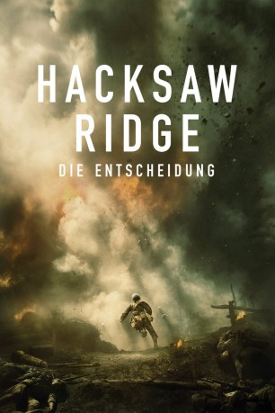

#5491 Hacksaw Ridge - Die Entscheidung
Auszeichnungen: 2 Oscars gewonnen für 4 Oscars nominiert 1 BAFTA-Awards gewonnen
 gesehen am 12.02.2017
gesehen am 12.02.2017
 
 IMDB-Wertung: 8.2 / 10
IMDB-Wertung: 8.2 / 10  IMDB-TOP-Platzierung: 178
IMDB-TOP-Platzierung: 178  Metascore: 0
Metascore: 0 
Die wahre Geschichte über den amerikanischen Army-Sanitäter Desmond T. Doss, der sich im Zweiten Weltkrieg als erster Soldat dem Dienst verweigerte und keine Waffen tragen wollte. Er wurde vor ein Gericht gestellt und musste zurück an die Front. Doch zurück bei den anderen Soldaten, wurde Doss erst einmal zum Opfer der Repressalien der anderen Soldaten. Während eines Angriffes auf seine Einheit wuchs er dann über sich hinaus und rettete im Kampf um Okinawa unter permanenten Beschuss des Gegners mehr als 75 seiner Kameraden vor dem Tod. Trotz seiner vorherigen Wehrdienstverweigerung bekam er die „Medal Of Honour“ vom damaligen Präsidenten Harry S. Truman verliehen und zog als Held in die Geschichte der Amerikaner ein.
Jahr: 2016
Dauer: 139 Minuten
FSK: 16
Land: Australien Studio: UFATonspuren: DTS - ,
Untertitel: Deutsch,
Auflösung: 1080p (1920x808) Größe: 12288 MB
Genre: Drama, Krieg, Geschichte, Biographie
Regisseur:  Mel Gibson
Mel Gibson
Drehbuch: Ashley Miller
Soundtrack:
Darsteller:
 Andrew Garfield als Desmond Doss
Andrew Garfield als Desmond Doss- Richard Pyros als Teach
- Jacob Warner als James Pinnick
- Milo Gibson als Lucky Ford
- Roman Guerriero als Young 'Hal' Doss
- Kasia Stelmach als Hiker's Friend
 Hugo Weaving als Tom Doss
Hugo Weaving als Tom Doss Rachel Griffiths als Bertha Doss
Rachel Griffiths als Bertha Doss- Tyler Coppin als Lynchburg Doctor
 Teresa Palmer als Dorothy Schutte
Teresa Palmer als Dorothy Schutte- Nathaniel Buzolic als Harold 'Hal' Doss
- Dennis Kreusler als Sergeant Amos
 Firass Dirani als Vito Rinnelli
Firass Dirani als Vito Rinnelli- Michael Sheasby als Tex Lewis
- Luke Pegler als Hollywood Zane
- Ben Mingay als Grease Nolan
 Luke Bracey als Smitty Ryker
Luke Bracey als Smitty Ryker- Nico Cortez als Wal Kirzinski
 Goran D. Kleut als Ghoul
Goran D. Kleut als Ghoul- Damien Thomlinson als Ralph Morgan
 Ben O'Toole als Corporal Jessop
Ben O'Toole als Corporal Jessop Vince Vaughn als Sgt Howell
Vince Vaughn als Sgt Howell- Jim Robison als Private Bates
- Samuel R. Wright als Private Dixon
- Mikael Koski als Private Giles
 Sam Worthington als Captain Glover
Sam Worthington als Captain Glover Richard Roxburgh als Colonel Stelzer
Richard Roxburgh als Colonel Stelzer- John Cannon als Corporal Cannon
- Robert Morgan als Colonel Sangston
 Helmut Bakaitis als Minister
Helmut Bakaitis als Minister Bill Young als General Musgrove
Bill Young als General Musgrove Benedict Hardie als Captain Daniels
Benedict Hardie als Captain Daniels- James Mackay als Prosecutor
 Ryan Corr als Lieutenant Manville
Ryan Corr als Lieutenant Manville- Sam Parsonson als 96th Soldier Bob
 Ori Pfeffer als Irv Schecter
Ori Pfeffer als Irv Schecter- Adrian Twigg als Soldier - Death Throes
- Sean Lynch als Popeye
- Luke McMahon als Stretcher Bearer
- Thomas Unger als Stretcher Bearer
- Hayden Geens als Wounded Private Blake
- Raphael Dubois als Corpse with Rats #4
- Tim Potter als Soldier Hank
 Matt Nable als Lt Colonel Cooney
Matt Nable als Lt Colonel Cooney- Laurence Brewer als Head Doctor
- Nobuaki Shimamoto als Japanese Officer
 Hiroshi Kasuga als Japanese Hanging Soldier
Hiroshi Kasuga als Japanese Hanging Soldier- Taka Uematsu als Reacting Japanese Soldier #2
- Adam Bowes als Rescued Wounded Leg Soldier
- Yuki Nagashima als Rescued Japanese Soldier
Datei: X:\2016(G-M)\Hacksaw Ridge - Die Entscheidung (2016, FSK16, 1920x808).mkv seit 08.02.2017
Festplatte: HD 2016(A-Z)
 Es gibt insgesamt 164 Filme in der Gruppe '2016(G-M)'
Es gibt insgesamt 164 Filme in der Gruppe '2016(G-M)'